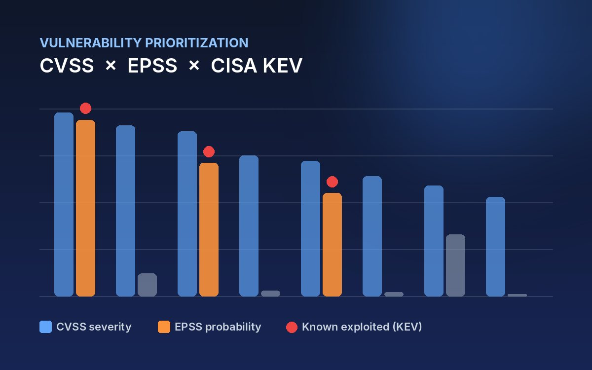

Vulnerability Exploitation Risk Analysis
Prioritizing real-world vulnerability risk by combining severity, exploit likelihood and known-exploited data.
- CVSS
- EPSS
- CISA KEV
- Risk Analysis
Process & results
Process
Collected vulnerability records and enriched each one with its CVSS severity score, EPSS exploit-probability score and CISA Known Exploited Vulnerabilities (KEV) status.
Results
Showed that severity alone is a poor guide: combining all three signals highlights the vulnerabilities that are most likely to be exploited.